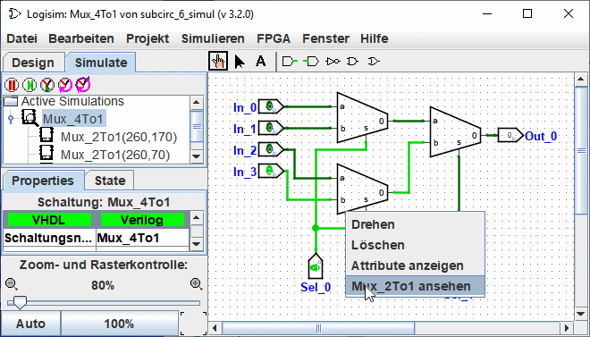

Fehlersuche in Teilschaltungen
Beim Testen komplexer Schaltungen werden Sie wahrscheinlich Fehler finden. Um festzustellen, was falsch ist, ist die Fähigkeit, das Geschehen in den Teilschaltungen zu erforschen, während der Hauptstromkreis läuft, eine große Hilfe. Um in den Zustand des Subcircuits zu gelangen, können Sie eine der drei folgenden Techniken anwenden.
Am einfachsten ist es wahrscheinlich, die Simulationshierarchie durch Klicken auf den Reiter Simulieren anzuzeigen. Die zweite Möglichkeit ist die Auswahl des Menüs | Projekt |→| Simulationsbaum anzeigen | . Dies ändert den Explorer-Bereich, um die Hierarchie der simulierten Teilschaltungen anzuzeigen.

Ein Doppelklick auf ein Element in dieser Hierarchie zeigt an, was innerhalb dieses Subcircuits geschieht.
Die dritte Möglichkeit, einen Subcircuit einzugeben, ist das Aufrufen seines Popup-Menüs durch einen Rechtsklick oder Strg-Klick und die Auswahl der Option | "Schaltungsname" anzehen | .

Und der dritte Weg ist, sich zuerst zu vergewissern, dass das Schaltwerkzeug ( ) ausgewählt ist und dann auf den zu analysierenden Sub-Circuit zu klicken. Eine Lupe erscheint in der Mitte des Sub-Circuit und ein Doppelklick auf die Lupe zeigt den Zustand des Sub-Circuit an.
) ausgewählt ist und dann auf den zu analysierenden Sub-Circuit zu klicken. Eine Lupe erscheint in der Mitte des Sub-Circuit und ein Doppelklick auf die Lupe zeigt den Zustand des Sub-Circuit an.

In jedem Fall werden Sie, sobald Sie sich den Teilschaltkreis visualisiert haben, feststellen, dass die Werte der Pins im Teilschaltkreis mit den Werten übereinstimmen, die von dem enthaltenden Schaltkreis durch sie gesendet werden.

Im Subcircuit dürfen Sie den Schaltplan ändern.
Wenn die Änderungen die Ausgänge des Teilkreises betreffen, werden die Änderungen an den Schaltkreis weitergegeben, der den Teilkreis enthält.
Eine Ausnahme: Die Eingänge der Teilschaltung werden durch die Werte bestimmt, die von der Superschaltung in die Schaltung eingespeist werden, so dass es keinen Sinn macht, diese Werte zu toggeln.
Wenn Sie jedoch versuchen, den Zustand des Eingangs eines Subcircuits zu ändern, erscheint ein Dialogfenster mit der Frage : Der Pin ist mit dem Zustand des Supercircuits verbunden. Einen neuen Schaltzustand erzeugen ?
Klicken Sie auf Nein, um die Umschaltanforderung abzubrechen, klicken Sie auf Ja, um eine Kopie des angezeigten Zustands, getrennt von der externen Schaltung, mit umgeschaltetem Eingangspin zu erstellen.
Wenn Sie die Anzeige und/oder Bearbeitung beendet haben, können Sie zum übergeordneten Schaltkreis zurückkehren, indem Sie entweder auf den übergeordneten Schaltkreis im Explorer-Fenster doppelklicken oder über das Menü | Simulieren |→ | Absteigen "Schaltungsname" |.
Next: Logisim libraries.